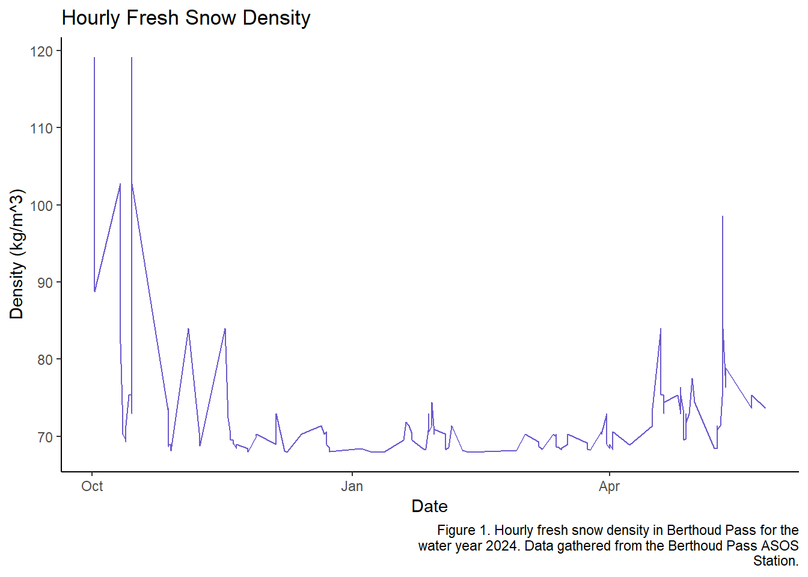
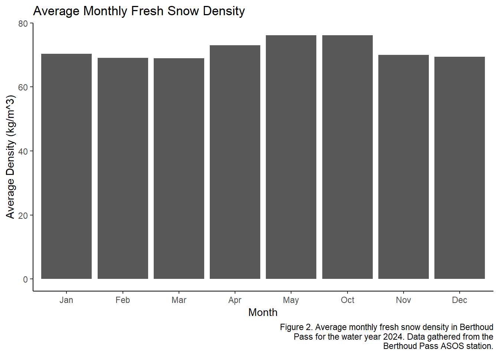
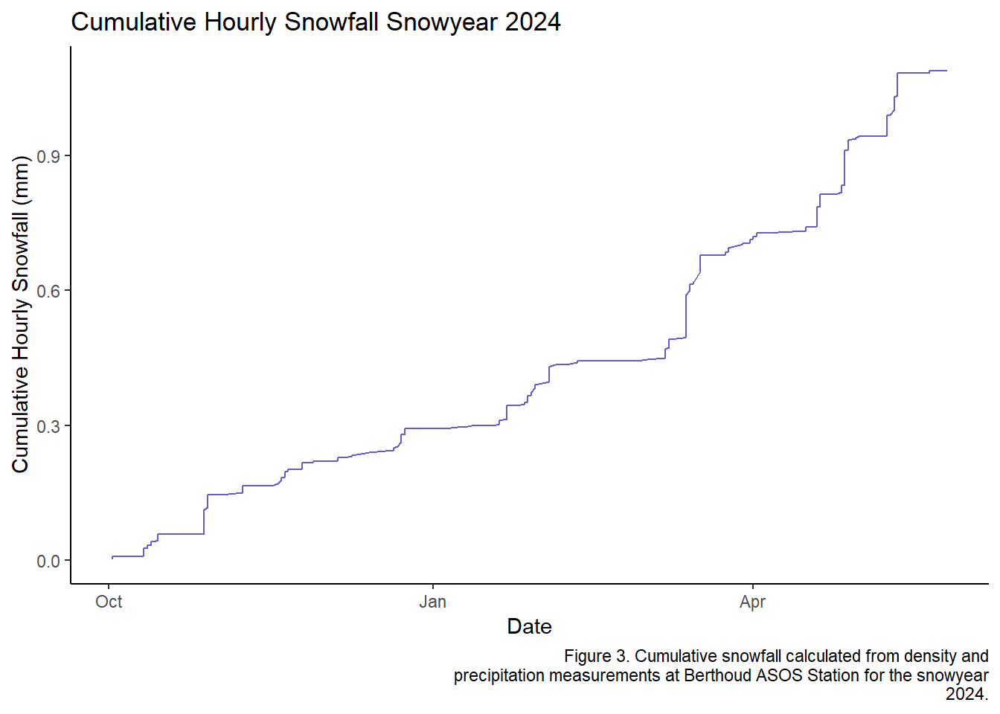
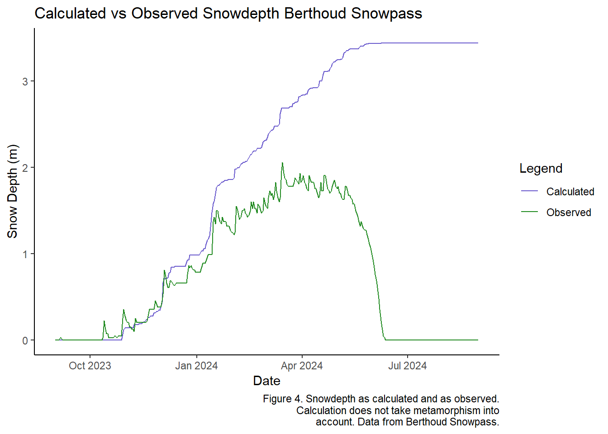
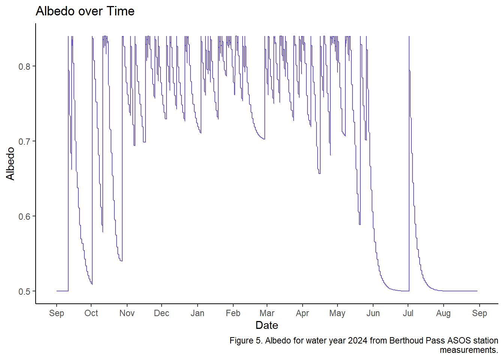

Chapter 4 Assignment 6 Snow Accumulation
4.1 Methods
Import the data from Iowa Mesonet and NRCS Snotel Data access sites.
Clean the ASOS data: change the date class to POSIXct, aggregate to the hourly time step, create a month column.
Clean the SNOTEL data: rename variables, select for date, swe, snow depth, precip accumulation, incrament precip, and average air temp in celsius, and converted precip to mm.
Calculate density using the Hedstrom-Pomeroy equation and average air temperature in degrees Celsius.
Filtered density dataset to include only values during periods of snow, so when temperature is less than zero and precip is greater than one.
Group density by both hourly and monthly parameters.
Convert density from a percentage to a decimal value and divided precip by density to determine hourly snowfall.
Used cumsum to create a cumulative sum of hourly snowfall for 2024 and plotted next to SNOTEL snow depth.
Calculated albedo with the following given parameters:
“Estimate and plot the albedo on an hourly basis. State the assumption for the albedo for soil when there is no snow accumulated. Use a fresh snow albedo of 0.84, and the first order exponential function to model albedo. After a snowfall without melting allow albedo to decay to 0.70 and to 0.50 during melt, i.e., T > 0oC.”
Key Assumption: I assume that when air temperature has been 0 or below for three days and when precipitation is occurring that snow is accumulating. October 13th at 1:00am in the morning is when there is complete snow cover at Berthoud Summit station.
4.2 Results
- Fresh snow: Estimate the hourly density of the fresh snow added to the snowpack (i.e., when it is snowing) using the Hedstrom-Pomeroy or another relevant equation. Plot either the average monthly fresh snow density or the hourly fresh snow density; and estimate and plot the net (cumulative) hourly snow depth without metamorphism, also known as snowfall.

- Snow Depth: From the daily SNOTEL snow depth data, compute the cumulative “snowfall,” i.e., the sum of all positive snow depth amounts. On the same graph, compare the computed snowfall to the amount of snow measured on the ground (observed snow depth).

- Albedo: Estimate and plot the albedo on an hourly basis. State the assumption for the albedo for soil when there is no snow accumulated. Use a fresh snow albedo of 0.84, and the first order exponential function to model albedo. After a snowfall without melting allow albedo to decay to 0.70 and to 0.50 during melt, i.e., T > 0oC.
